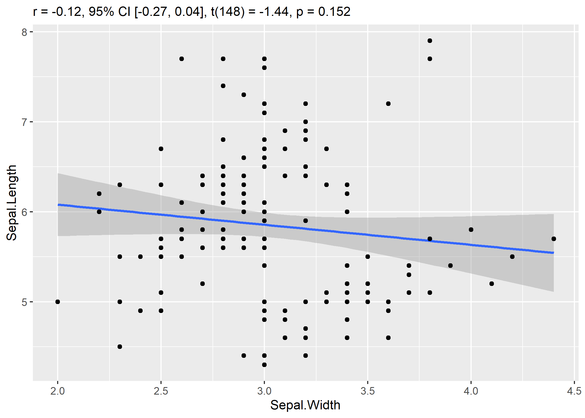
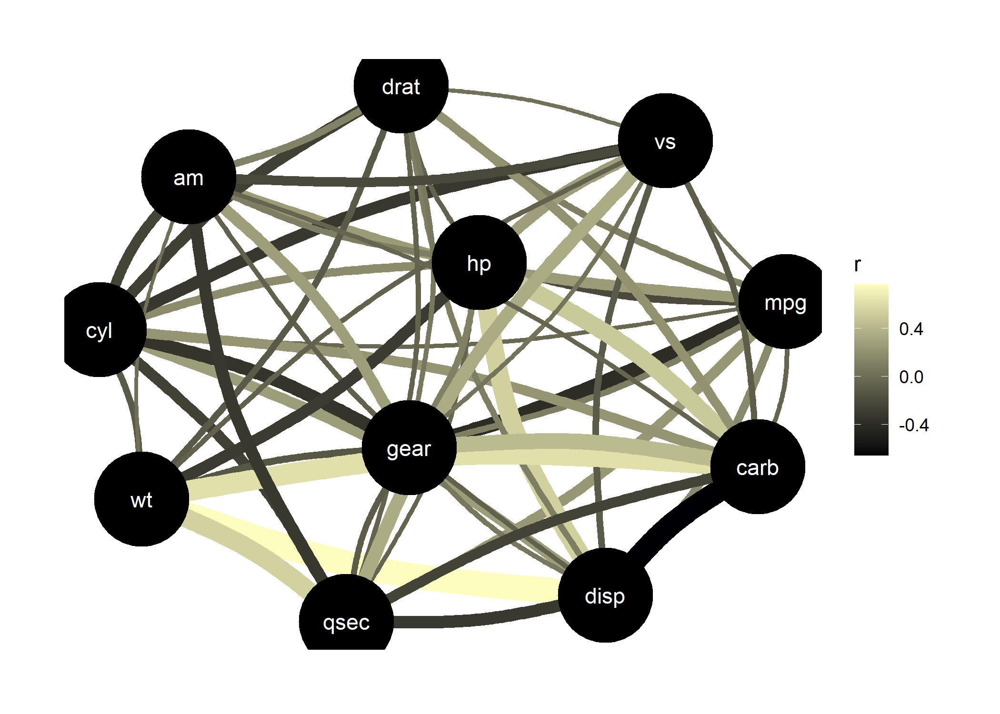

correlation is an easystats package focused on correlation analysis. It’s lightweight, easy to use, and allows for the computation of many different kinds of correlations, such as partial correlations, Bayesian correlations, multilevel correlations, polychoric correlations, biweight, percentage bend or Sheperd’s Pi correlations (types of robust correlation), distance correlation (a type of non-linear correlation) and more, also allowing for combinations between them (for instance, Bayesian partial multilevel correlation).
Citation
You can cite the package as follows:
Makowski, D., Ben-Shachar, M. S., Patil, I., & Lüdecke, D. (2020). Methods and algorithms for correlation analysis in R. Journal of Open Source Software, 5(51), 2306. https://doi.org/10.21105/joss.02306
Makowski, D., Wiernik, B. M., Patil, I., Lüdecke, D., & Ben-Shachar, M. S. (2022). correlation: Methods for correlation analysis [R package]. https://CRAN.R-project.org/package=correlation (Original work published 2020)
Installation

The correlation package is available on CRAN, while its latest development version is available on R-universe (from rOpenSci).
| Type | Source | Command |
|---|---|---|
| Release | CRAN | install.packages("correlation") |
| Development | R-universe | install.packages("correlation", repos = "https://easystats.r-universe.dev") |
Once you have downloaded the package, you can then load it using:
Tip
Instead of
library(bayestestR), uselibrary(easystats). This will make all features of the easystats-ecosystem available.To stay updated, use
easystats::install_latest().
Features
The correlation package can compute many different types of correlation, including:
✅ Pearson’s correlation
✅ Spearman’s rank correlation
✅ Kendall’s rank correlation
✅ Biweight midcorrelation
✅ Distance correlation
✅ Percentage bend correlation
✅ Shepherd’s Pi correlation
✅ Blomqvist’s coefficient
✅ Hoeffding’s D
✅ Gamma correlation
✅ Gaussian rank correlation
✅ Point-Biserial and biserial correlation
✅ Winsorized correlation
✅ Polychoric correlation
✅ Tetrachoric correlation
✅ Multilevel correlation
An overview and description of these correlations types is available here. Moreover, many of these correlation types are available as partial or within a Bayesian framework.
Examples
The main function is correlation(), which builds on top of cor_test() and comes with a number of possible options.
Correlation details and matrix
results <- correlation(iris)
results
## # Correlation Matrix (pearson-method)
##
## Parameter1 | Parameter2 | r | 95% CI | t(148) | p
## -------------------------------------------------------------------------
## Sepal.Length | Sepal.Width | -0.12 | [-0.27, 0.04] | -1.44 | 0.152
## Sepal.Length | Petal.Length | 0.87 | [ 0.83, 0.91] | 21.65 | < .001***
## Sepal.Length | Petal.Width | 0.82 | [ 0.76, 0.86] | 17.30 | < .001***
## Sepal.Width | Petal.Length | -0.43 | [-0.55, -0.29] | -5.77 | < .001***
## Sepal.Width | Petal.Width | -0.37 | [-0.50, -0.22] | -4.79 | < .001***
## Petal.Length | Petal.Width | 0.96 | [ 0.95, 0.97] | 43.39 | < .001***
##
## p-value adjustment method: Holm (1979)
## Observations: 150The output is not a square matrix, but a (tidy) dataframe with all correlations tests per row. One can also obtain a matrix using:
summary(results)
## # Correlation Matrix (pearson-method)
##
## Parameter | Petal.Width | Petal.Length | Sepal.Width
## -------------------------------------------------------
## Sepal.Length | 0.82*** | 0.87*** | -0.12
## Sepal.Width | -0.37*** | -0.43*** |
## Petal.Length | 0.96*** | |
##
## p-value adjustment method: Holm (1979)Note that one can also obtain the full, square and redundant matrix using:
summary(results, redundant = TRUE)
## # Correlation Matrix (pearson-method)
##
## Parameter | Sepal.Length | Sepal.Width | Petal.Length | Petal.Width
## ----------------------------------------------------------------------
## Sepal.Length | | -0.12 | 0.87*** | 0.82***
## Sepal.Width | -0.12 | | -0.43*** | -0.37***
## Petal.Length | 0.87*** | -0.43*** | | 0.96***
## Petal.Width | 0.82*** | -0.37*** | 0.96*** |
##
## p-value adjustment method: Holm (1979)Correlation tests
The cor_test() function, for pairwise correlations, is also very convenient for making quick scatter plots.

Grouped dataframes
The correlation() function also supports stratified correlations, all within the tidyverse workflow!
iris %>%
select(Species, Sepal.Length, Sepal.Width, Petal.Width) %>%
group_by(Species) %>%
correlation()
## # Correlation Matrix (pearson-method)
##
## Group | Parameter1 | Parameter2 | r | 95% CI | t(48) | p
## ----------------------------------------------------------------------------------
## setosa | Sepal.Length | Sepal.Width | 0.74 | [ 0.59, 0.85] | 7.68 | < .001***
## setosa | Sepal.Length | Petal.Width | 0.28 | [ 0.00, 0.52] | 2.01 | 0.101
## setosa | Sepal.Width | Petal.Width | 0.23 | [-0.05, 0.48] | 1.66 | 0.104
## versicolor | Sepal.Length | Sepal.Width | 0.53 | [ 0.29, 0.70] | 4.28 | < .001***
## versicolor | Sepal.Length | Petal.Width | 0.55 | [ 0.32, 0.72] | 4.52 | < .001***
## versicolor | Sepal.Width | Petal.Width | 0.66 | [ 0.47, 0.80] | 6.15 | < .001***
## virginica | Sepal.Length | Sepal.Width | 0.46 | [ 0.20, 0.65] | 3.56 | 0.002**
## virginica | Sepal.Length | Petal.Width | 0.28 | [ 0.00, 0.52] | 2.03 | 0.048*
## virginica | Sepal.Width | Petal.Width | 0.54 | [ 0.31, 0.71] | 4.42 | < .001***
##
## p-value adjustment method: Holm (1979)
## Observations: 50Bayesian Correlations
It is very easy to switch to a Bayesian framework.
correlation(iris, bayesian = TRUE)
## # Correlation Matrix (pearson-method)
##
## Parameter1 | Parameter2 | rho | 95% CI | pd | % in ROPE
## --------------------------------------------------------------------------
## Sepal.Length | Sepal.Width | -0.11 | [-0.27, 0.04] | 92.70% | 42.83%
## Sepal.Length | Petal.Length | 0.86 | [ 0.82, 0.90] | 100%*** | 0%
## Sepal.Length | Petal.Width | 0.81 | [ 0.75, 0.86] | 100%*** | 0%
## Sepal.Width | Petal.Length | -0.41 | [-0.55, -0.28] | 100%*** | 0%
## Sepal.Width | Petal.Width | -0.35 | [-0.49, -0.22] | 100%*** | 0%
## Petal.Length | Petal.Width | 0.96 | [ 0.95, 0.97] | 100%*** | 0%
##
## Parameter1 | Prior | BF
## ------------------------------------------
## Sepal.Length | Beta (3 +- 3) | 0.509
## Sepal.Length | Beta (3 +- 3) | 2.14e+43***
## Sepal.Length | Beta (3 +- 3) | 2.62e+33***
## Sepal.Width | Beta (3 +- 3) | 3.49e+05***
## Sepal.Width | Beta (3 +- 3) | 5.29e+03***
## Petal.Length | Beta (3 +- 3) | 1.24e+80***
##
## Observations: 150Tetrachoric, Polychoric, Biserial, Biweight…
The correlation package also supports different types of methods, which can deal with correlations between factors!
correlation(iris, include_factors = TRUE, method = "auto")
## # Correlation Matrix (auto-method)
##
## Parameter1 | Parameter2 | r | 95% CI | t(148) | p
## -------------------------------------------------------------------------------------
## Sepal.Length | Sepal.Width | -0.12 | [-0.27, 0.04] | -1.44 | 0.452
## Sepal.Length | Petal.Length | 0.87 | [ 0.83, 0.91] | 21.65 | < .001***
## Sepal.Length | Petal.Width | 0.82 | [ 0.76, 0.86] | 17.30 | < .001***
## Sepal.Length | Species.setosa | -0.72 | [-0.79, -0.63] | -12.53 | < .001***
## Sepal.Length | Species.versicolor | 0.08 | [-0.08, 0.24] | 0.97 | 0.452
## Sepal.Length | Species.virginica | 0.64 | [ 0.53, 0.72] | 10.08 | < .001***
## Sepal.Width | Petal.Length | -0.43 | [-0.55, -0.29] | -5.77 | < .001***
## Sepal.Width | Petal.Width | -0.37 | [-0.50, -0.22] | -4.79 | < .001***
## Sepal.Width | Species.setosa | 0.60 | [ 0.49, 0.70] | 9.20 | < .001***
## Sepal.Width | Species.versicolor | -0.47 | [-0.58, -0.33] | -6.44 | < .001***
## Sepal.Width | Species.virginica | -0.14 | [-0.29, 0.03] | -1.67 | 0.392
## Petal.Length | Petal.Width | 0.96 | [ 0.95, 0.97] | 43.39 | < .001***
## Petal.Length | Species.setosa | -0.92 | [-0.94, -0.89] | -29.13 | < .001***
## Petal.Length | Species.versicolor | 0.20 | [ 0.04, 0.35] | 2.51 | 0.066
## Petal.Length | Species.virginica | 0.72 | [ 0.63, 0.79] | 12.66 | < .001***
## Petal.Width | Species.setosa | -0.89 | [-0.92, -0.85] | -23.41 | < .001***
## Petal.Width | Species.versicolor | 0.12 | [-0.04, 0.27] | 1.44 | 0.452
## Petal.Width | Species.virginica | 0.77 | [ 0.69, 0.83] | 14.66 | < .001***
## Species.setosa | Species.versicolor | -0.88 | [-0.91, -0.84] | -22.43 | < .001***
## Species.setosa | Species.virginica | -0.88 | [-0.91, -0.84] | -22.43 | < .001***
## Species.versicolor | Species.virginica | -0.88 | [-0.91, -0.84] | -22.43 | < .001***
##
## p-value adjustment method: Holm (1979)
## Observations: 150Partial Correlations
It also supports partial correlations (as well as Bayesian partial correlations).
iris %>%
correlation(partial = TRUE) %>%
summary()
## # Correlation Matrix (pearson-method)
##
## Parameter | Petal.Width | Petal.Length | Sepal.Width
## -------------------------------------------------------
## Sepal.Length | -0.34*** | 0.72*** | 0.63***
## Sepal.Width | 0.35*** | -0.62*** |
## Petal.Length | 0.87*** | |
##
## p-value adjustment method: Holm (1979)Gaussian Graphical Models (GGMs)
Such partial correlations can also be represented as Gaussian Graphical Models (GGM), an increasingly popular tool in psychology. A GGM traditionally include a set of variables depicted as circles (“nodes”), and a set of lines that visualize relationships between them, which thickness represents the strength of association (see Bhushan et al., 2019).
library(see) # for plotting
library(ggraph) # needs to be loaded
plot(correlation(mtcars, partial = TRUE)) +
scale_edge_color_continuous(low = "#000004FF", high = "#FCFDBFFF")
Multilevel Correlations
It also provide some cutting-edge methods, such as Multilevel (partial) correlations. These are are partial correlations based on linear mixed-effects models that include the factors as random effects. They can be see as correlations adjusted for some group (hierarchical) variability.
iris %>%
correlation(partial = TRUE, multilevel = TRUE) %>%
summary()
## # Correlation Matrix (pearson-method)
##
## Parameter | Petal.Width | Petal.Length | Sepal.Width
## -------------------------------------------------------
## Sepal.Length | -0.17* | 0.71*** | 0.43***
## Sepal.Width | 0.39*** | -0.18* |
## Petal.Length | 0.38*** | |
##
## p-value adjustment method: Holm (1979)However, if the partial argument is set to FALSE, it will try to convert the partial coefficient into regular ones.These can be converted back to full correlations:
iris %>%
correlation(partial = FALSE, multilevel = TRUE) %>%
summary()
## Parameter | Petal.Width | Petal.Length | Sepal.Width
## -------------------------------------------------------
## Sepal.Length | 0.36*** | 0.76*** | 0.53***
## Sepal.Width | 0.47*** | 0.38*** |
## Petal.Length | 0.48*** | |Contributing and Support
In case you want to file an issue or contribute in another way to the package, please follow this guide. For questions about the functionality, you may either contact us via email or also file an issue.
Code of Conduct
Please note that this project is released with a Contributor Code of Conduct. By participating in this project you agree to abide by its terms.